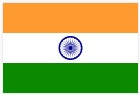
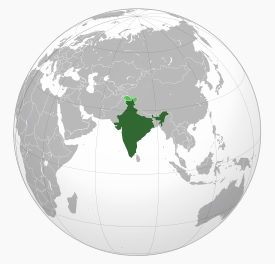

| Bandera | Emblema Nacional | Ubicación | Capital | Idiomas Oficiales | Gentilicio |
|---|---|---|---|---|---|
|  |  | Nueva Delhi | Hindi e inglés | indio, -a |
India, oficialmente República de la India (en hindi, भारत गणराज्य, Bhārat Gaṇarājya), es un país soberano ubicado en el sur del continente asiático. Con sus 1.331 millones de habitantes (en 2020), es el segundo país del mundo por población4. Su superficie es de 3.287.263 km², lo cual lo ubica en el séptimo lugar entre los países más extensos del planeta. Limita con el océano Índico al sur, con el mar arábigo al oeste y con el golfo de Bengala al este, a lo largo de una línea costera de más de 7.517 kilómetros.
La India también limita con Pakistán al oeste; al norte con China, Nepal y Bután y al este con Bangladés y Birmania. Además, la India se encuentra cerca de las islas de Sri Lanka, Maldivas e Indonesia. Su capital es Nueva Delhi y su ciudad más poblada es Bombay.
Hogar de la cultura del valle del Indo y una región histórica por sus rutas comerciales y grandes imperios, el subcontinente indio fue identificado por su riqueza cultural y comercial en la mayor parte de su larga historia. Cuatro de las religiones más importantes del mundo, el hinduismo, el budismo, el jainismo y el sijismo, se originaron allí, mientras que otras religiones como el zoroastrismo, el judaísmo, el cristianismo y el islam llegaron durante el I milenio, dando forma a diversas culturas de la región.
Gradualmente anexada por la Compañía Británica de las Indias Orientales desde principios del siglo XVIII y colonizada por el Reino Unido desde mediados del siglo XIX, la India se convirtió en una nación independiente en 1947, tras una lucha por la independencia que estuvo marcada por un movimiento de no violencia.
La India es una república federal compuesta por 28 estados, seis territorios de la Unión y el territorio de la capital Nueva Delhi, con un sistema de democracia parlamentaria. En 2017, la economía india es la tercera más grande del mundo y la sexta en términos de PIB nominal. Las reformas económicas de 1991 la han transformado en una de las economías de más rápido crecimiento; sin embargo, todavía sufre de problemas como los altos niveles de pobreza, analfabetismo, pandemias, malnutrición y constantes violaciones de los derechos de las mujeres. En 2016, el 10% más rico de la población posee 55% del ingreso nacional. Además de una sociedad plural en lo religioso, multilingüe y multiétnica, la India también alberga una flora y fauna diversas en diferentes hábitats protegidos.
Además, la República de la India es uno de los diez países que posee un arsenal nuclear y no es signataria del Tratado de No Proliferación Nuclear, dado que, en sus actuales términos, no le permitiría mantener su armamento atómico. La India pasó del puesto 140 al 177 entre 2016 y 2018 en el Índice de Desempeño Ambiental compilado por investigadores de las universidades de Yale y Columbia. En particular, el estudio destaca el "alarmante" deterioro de la calidad del aire.